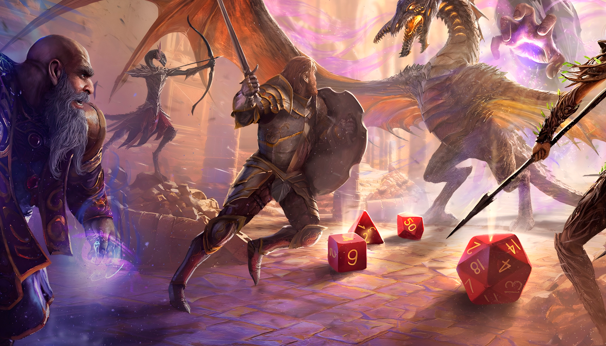
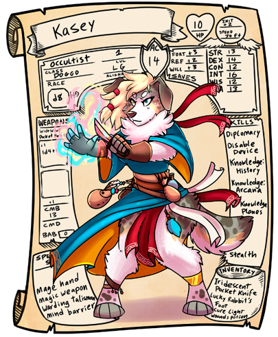
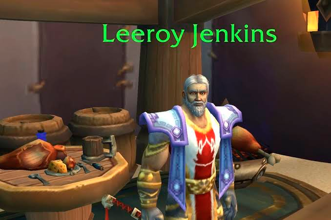

Você não vai só ouvir e contar histórias, mas realmente participar delas ativamente, assumindo o papel dos personagens centrais. É parecido com teatro, mas você inventa suas falas.
Dentro de um ambiente fictício da narrativa compartilhada, falar “vou tentar subornar o guarda para que passemos pelo portão” tem o mesmo peso que o jogador declamar dramaticamente “ó protetor dos portais, faço um apelo a ti com um agrado monetário para que possas olhar para o outro lado”. A mensagem e ações passadas são as mesmas.
Em geral, jogadores de RPG, ainda mais os mais experientes, estão acostumados a associar que mais elaborado é melhor. Devemos encontrar um meio-termo agradável para todos na mesa.
Se o jogo oferece mecânicas para disputas sociais, o sucesso destas disputas não deveria vir da capacidade de persuasão da vida real do jogador (o que não impede que ele receba algum tipo de recompensa por sua interpretação). Essa distinção é importante porque se o narrador recompensa o rebuscamento das palavras e ignora rolagens faz com que duas coisas aconteçam: jogadores introvertidos fiquem proibidos de jogar com personagens com habilidades sociais, e que perícias sociais sejam inúteis mecanicamente, já que um jogador com lábia afiada não precisará testá-las.
Depende muito do gosto do grupo, mas em resumo: se você quer falar exatamente como o personagem, fazer sua voz, seus jeitos, faça isso! Quer dizer o que ele está pensando e fazendo? Pode também. Se todos estão se divertindo então tudo está bem.
Uma coisa é certa: todo jogador gostaria de ser e fazer melhor ou diferente, mas é surpreendentemente comum a frequência com que a maioria dos jogadores esquecem de fazer as coisas mais óbvias.
Pense em personagens que queiram estar se envolvendo nas situações, que estejam sempre buscando algo mais e que tenham motivos para não se contentar e ficar parados. Os protagonistas de uma história precisam fazer a diferença.
Imagine algo que faça seu personagem se destacar dos outro e dê vida a essa característica. Mas também, crie um personagem incompleto, que precise de algo, que sinta a necessidade de mais. Um personagem que não tenha esses “pedaços” faltando não tem espaço para crescer e se desenvolver, muito menos terá razões para ir em busca de aventuras e se envolver em mistérios e outras coisas que pessoas normais ignorariam.
Como o RPG é um jogo colaborativo e social, onde, geralmente, você joga em conjunto com outras pessoas, é de bom grado que seu personagem tenha fraquezas que precisem de companheiros para ajudá-lo. Isso permite que cada jogador tenha um papel no grupo e chance de se destacar, sem contar que personagens com fraquezas são muito mais humanos e identificáveis.
Por fim, quando estiver jogando com o seu personagem pense como se fosse ele, aja como ele agiria na narrativa e não em termos de jogo. Haverá situações em que você sabe que uma escolha seria mais vantajosa em termos de jogo, mas que seu personagem tomaria uma decisão diferente devido a sua personalidade e conhecimento limitado. Este é um jogo de se criar histórias e não um jogo de competição para ver quem cria o personagem mais forte (até porque, se fosse, o Mestre ganharia sempre).
Mesmo que não seja o seu turno ou você não esteja interagino na cena, você precisa prestar atenção ao que está acontecendo ao seu redor. Esteja atento, não perca a oportunidade de agir e evite atrapalhar fazendo a escolha errada ou pior: nenhuma.
Quando um jogador desconhece as capacidades do seu personagem, ele pode não só não aproveitar todo o potencial e diversão do jogo, como atrapalhar o grupo inteiro interrompendo o andamento do jogo.
É responsabilidade do jogador saber o que o seu personagem é capaz de fazer. Não compreender ou estar em dúvida quanto uma regra é totalmente normal, mas espera-se que o jogador conheça o seu personagem.

Tenha sempre a ficha em mãos e faça anotações.
Manter a ficha do seu personagem atualizada é tão importante para você quanto para o grupo de jogadores, principalmente em jogos com a mecânica de progressão de níveis.
Em diversos jogos, conforme for a situação, existirão modificadores e bônus relevantes que determinarão um sucesso ou falha nas rolagens de dados. Logo, manter a ficha sempre atualizada é especialmente importante para aumentar as chances do seu personagem obter um resultado satisfatório quando houver um conflito no jogo.
No geral, retardar o jogo somente para procurar alguma regra obscura nos livros não ajudará, é um desperdício de tempo e de diversão. Se algum jogador não tem certeza sobre determinada regra, usar o bom senso para seguir em frente será sempre a melhor decisão. Para isso existe o Mestre, que orientará o jogador sobre a melhor maneira de manter o jogo em movimento.
Se todos concordam em parar e procurar por uma regra para uma eventual situação em jogo, então significa que é um momento importante na sessão. Do contrário, relaxe e continue jogando.
Exceto que faça parte do conceito do seu personagem ser o centro das atenções na grande maioria das vezes, ser cauteloso é uma forma sensata de evitar perigos, permitindo discernir qual o melhor caminho a seguir, ou qual a melhor ação a adotar para uma determinada situação em jogo.
Observar, analisar e compreender a situação em jogo permitirá que o problema seja solucionado com maior facilidade.
Novamente, aqui cabe o conceito do seu personagem, como ele é e agiria. Mas no geral você deve estar sempre pronto para agir imediatamente. Jogadores experientes parecem estar sempre preparados para qualquer circunstância em jogo e isso advém de sua sabedoria, prudência e boa observação. Quanto melhor você se prepara, mais chance terá de realizar ações e reações imediatamente, de forma clara e confiante.
Observando o que os outros jogadores estão fazendo, um jogador estará mais bem preparado para agir em seu turno, sendo essa uma boa razão para prestar atenção quando não é sua vez. Você poderá planejar, definindo melhor as suas ações, agindo da melhor maneira.
Planejar suas ações se torna mais importante quando existem muitas opções disponíveis para o seu personagem; o jogador precisa saber qual será a sua ação e não vai atrasar o jogo no seu turno.
Conforme a campanha segue, a história do seu personagem cresce. E, além de tudo o que acontece, se o seu personagem tem vários tipos de habilidades, magias, poderes, itens, contatos e aliados, é quase impossível lembrar-se de tudo ou mesmo ter espaço suficiente na ficha para preencher todos estes requisitos.
Logo, o ideal é fazer pequenas anotações de eventos importantes, locais, nomes de personagens do Mestre e resumos de habilidades, magias, danos e tudo aquilo que julgar necessário, facilitando o trabalho de procurar.
Muitos pensam que a interpretação começa no início da sessão. Mas o que poucos sabem é que esse processo começa na criação do background. Pense em algo diferente, escreva os gostos pessoais, se ele gosta de frio, odeia calor, se tem alguma alergia ou se simplesmente ronca enquanto dorme. Acrescente pequenos traços a sua personalidade.
Uma coisa que faz seu personagem ganhar vida e ser memorável é criar hábitos e manias (uma tosse frequente, o retrato de sua filha no bolso, coisas assim).
Lembre-se do físico também. Aproveite seu personagem. Se ele é alguém de estatura alta e musculoso, você pode erguer pessoas, intimidar com mais facilidade ou levantar objetos maiores para jogar, vai da sua imaginação. Se você é alguém alto e forte, biologicamente é necessário comer mais. Usar sua aparência no role play facilita sua criatividade; sempre pense como ele e nunca como o jogador, afinal de contas, você está vivenciando outra vida.
Se quiser, use o jeito dele de falar, faça os gestos que ele faria, reaja como ele diante de algo. Imagine a si mesmo vivendo as experiências dele.
Durante o jogo, faça o que seu personagem faria, mesmo sendo uma ideia ruim. Por exemplo: o jogador acha uma péssima ideia entrar naquele lugar cheio de inimigos. Contudo, o personagem é um bárbaro que acredita ser forte o bastante para vencer todos e quer entrar lá. Então entre lá. Jogos de interpretação são sobre contar histórias, não sobre vitória ou derrota.

Você conhece a história de Leeroy Jenkins? É de um vídeo viral sobre um jogador de World of Warcraft que não esperou o grupo terminar o planejamento do ataque e avançou sobre uma horda de monstros poderosos gritando o próprio nome. Ele e todo o grupo morreram. É um ótimo exemplo de “se o personagem faria, faça”. Ou também, de pensar melhor e ser prudente.